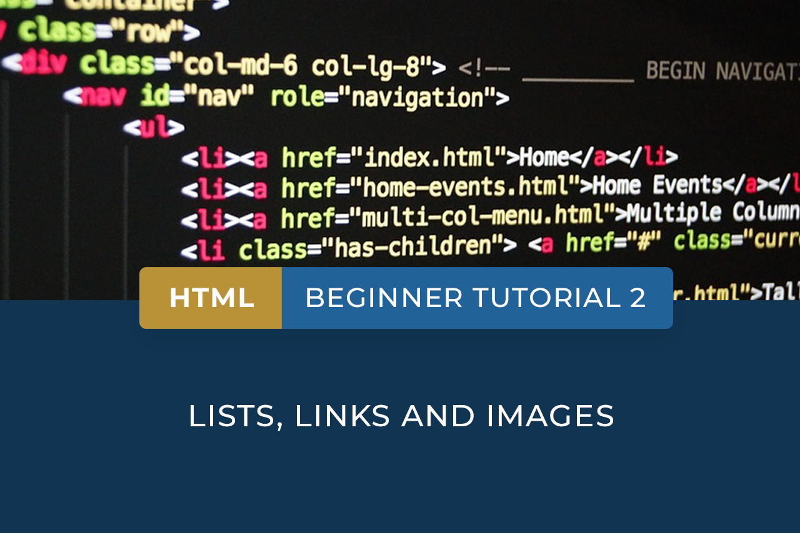
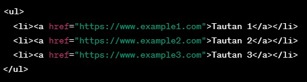
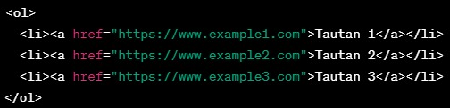

Link dan List

Sumber : HyperionDev Blog
{kind=link}
- Digunakan untuk membuat daftar tautan tanpa urutan tertentu.
- Setiap tautan dalam elemen <ul> ditempatkan dalam elemen <li> (List Item).
Elemen <ul> (Unordered List):
- Digunakan untuk membuat daftar tautan dengan urutan yang diberikan.
- Setiap tautan dalam elemen <ol> juga ditempatkan dalam elemen <li>.
Elemen <ol> (Ordered List):
- Digunakan untuk menentukan setiap tautan dalam daftar, baik dalam elemen <ul> maupun <ol>.
- Setiap elemen <li> berisi satu tautan atau item dalam daftar.
Elemen <li> (List Item):
- Digunakan dalam elemen <a> (anchor) untuk menentukan URL atau alamat tautan yang akan dibuka ketika tautan diklik.
- Contoh: <a href="https://www.example.com">Example Website</a>.
Atribut "href":
- Digunakan dalam elemen <a> untuk mengontrol bagaimana tautan dibuka.
- "target="_blank"" akan membuka tautan dalam jendela atau tab baru.
Atribut "target":
Contoh Daftar Tautan (Unordered List):
Contoh Daftar Tautan (Ordered List):
- Anda dapat menyusun daftar tautan dengan tingkat kedalaman yang berbeda untuk membuat daftar bertingkat.
- Gunakan elemen <ul> atau <ol> di dalam elemen <li>.
Daftar Bertingkat:
- Anda dapat menggunakan CSS untuk mengubah tampilan dan gaya daftar tautan, seperti warna, ukuran font, dan margin.
Gaya CSS:
- Daftar tautan juga dapat ditempatkan dalam tabel HTML untuk membuat tampilan yang lebih terstruktur dan rapi.
Daftar Tautan dalam Tabel:
Tronic!